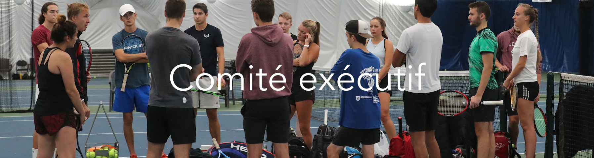

L'équipe de direction du Club de tennis de l'Université d'Ottawa est composée de dix étudiants passionnés et travailleurs de l'Université d'Ottawa qui se consacrent à la croissance, à l'amélioration et à la promotion du Club de tennis de l'Université d'Ottawa. Chaque étudiant du Comité exécutif occupe un rôle respectif: Président, Trésorier, Communications, Marketing, Développement du site Web, capitaines/co-capitaines masculins et féminins et représentants des divisions 2 et 3.
Rencontrez l'équipe!

Miteau Butskhrikidze
(Président)
Miteau est le président du club de tennis de l'Université d'Ottawa. Il a commencé à jouer au tennis à l'âge de dix ans et est rapidement tombé amoureux de ce sport. Il a été entraîneur au Wychwood Tennis Club de Gatineau, au Québec, pendant plusieurs années au cours de ses études secondaires et universitaires, ce qui lui a permis d'apprécier les efforts déployés pour soutenir un club de tennis et tous ses joueurs.
Miteau a obtenu un double diplôme en sciences politiques et en droit (J.D.) de l'Université d'Ottawa en juin 2023 et est actuellement stagiaire chez Norton Rose Fulbright à Ottawa. Il reste un joueur de tennis dans l'âme et est heureux de diriger l'UOTC à titre administratif.

Nickon Bostandoustnik
(Trésorier)
Nickon est un étudiant de 4ème année qui étudie la finance à Telfer. Il prévoit d'obtenir son certificat de gestion des risques financiers et d'aller à la faculté de droit après avoir obtenu son diplôme. Il aspire à devenir un avocat d'entreprise travaillant dans le domaine des finances. Lorsqu'on lui a proposé le poste de trésorier de l'UOTC, Nickon y a vu une excellente occasion de travailler sur les finances du club ainsi qu'avec des chiffres, ce qui est l'une de ses forces. Nickon est tombé amoureux du tennis au cours de l'été 2022, lorsqu'on lui a demandé de jouer avec l'un de ses amis. Le tennis est le sport qui l'a le plus attiré parmi tous ceux qu'il a pratiqués, comme le hockey, le soccer, la natation libre et le taekwondo. Il a l'intention d'améliorer son niveau de compétition au mieux de ses capacités et se réjouit de rencontrer autant de personnes que possible sur les courts.
Estefania Zaragoza Pedroza
(Co-Responsable en Communications)
Estefania est étudiante en deuxième année de soins infirmiers. Son rôle dans l'équipe est de gérer les plateformes de médias sociaux afin de promouvoir l'équipe et de répondre aux questions des membres potentiels ou actuels.
Elle pense que son extraversion est la principale raison pour laquelle elle a été choisie comme co-responsable de la communication. Pour elle, une communication claire est toujours un élément clé pour maintenir l'intégrité au sein d'une équipe, et elle a l'intention de faire de son mieux pour l'améliorer.
Mathis Doyon
(Co-Responsable en Communications)
Mathis est étudiant de première année en sciences de l'activité physique (BScHK). Il est joueur de division 1 pour l'équipe des Gee-Gees. Son rôle dans ce club est de répondre aux questions et de contacter les autres écoles concernant les compétitions.
Il a accepté ce rôle, car l'implication est essentielle pour lui. Il veut aider le club et l'équipe à grandir. Il croit que son engagement et sa capacité à communiquer en trois langues et à apporter un autre aspect culturel à l'équipe l'aideront à exceller dans son poste.
Joel Scully
(Responsable en Marketing)
Joel est le responsable en marketing du Club de tennis de l'Université d'Ottawa. Il est responsable de l'élaboration et de l'exécution de stratégies de marketing qui augmentent la visibilité, l'engagement et le succès du programme. Joel termine sa deuxième année à l'Université d'Ottawa, où il étudie les sciences de l'activité physique. Il est originaire d'Ottawa et joue au tennis depuis son plus jeune âge.
Joel est une personne très dévoué du club, et il est connu pour être extraverti et avoir une attitude positive. Il adore le tennis et a participé à des tournois UTR et OTA dans la ville et la province. Son objectif est de développer le tennis au Canada à tous les niveaux de jeu.

Céline Wan Min Kee
(Développeur Web)
Céline est étudiante en troisième année d'informatique. Son rôle est de maintenir le site web de l'UOTC et de maximiser l'expérience de l'utilisateur du site web. Elle travaille en étroite collaboration avec les responsables de la communication pour s'assurer que le site web fournit des informations actualisées et pertinentes sur le club.
Elle estime qu'une présence en ligne permet à l'équipe de mieux se faire connaître et de promouvoir le club. Cela aidera le club à se développer progressivement. Les informations en ligne sont également facilement accessibles aux nouveaux joueurs potentiels qui souhaiteraient rejoindre l'équipe.

Francesca Nitica
(Capitaine Féminin)
Francesca est en première année d'études de gestion des technologies de l'entreprise avec une mineure en mathématiques. Elle a commencé à jouer au tennis à l'âge de 14 ans et s'est rapidement passionnée pour ce sport. Francesca aime prendre des responsabilités et soutenir et encourager ses camarades.
Francesca est également entraîneur de tennis pour les enfants et les adolescents lors de camps d'été et de printemps. Elle a toujours aimé aider les autres et est enthousiaste à l'idée d'encourager les enfants à aimer le tennis et à se passionner pour ce sport. Elle est dévouée à son poste et est ravie de faire partie de l'équipe de tennis de l'Université d'Ottawa.

Jacob Leong
(Captaine Masculin)
Jacob est le capitaine homme de l'équipe et il est étudiant en quatrième année de sciences biomédicales, avec une spécialisation en neurosciences.
Il joue depuis l'âge de 5 ans et on le voit souvent sur les courts d'Ottawa, soit en train d'entraîner, soit en train de jouer. Il est l'entraîneur de nos équipes de division 2 et 3 et son revers et son retour de service sont une véritable source d'inspiration.

Giorgio Sawaya
(Représentant Homme des divisions 2 & 3)
Giorgio recueille et répercute les commentaires des membres des divisions 2 et 3, recueille et soumet les commandes de marchandises et aide à diriger les entraînements lorsque les entraîneurs habituels sont absents. Giorgio termine sa dernière année d'études en génie logiciel. Il a appris à jouer au tennis dès son plus jeune âge et le pratique de manière récréative depuis des années, mais il souhaite maintenant passer au niveau supérieur en rejoignant le club. Il aime voir les joueurs évoluer et croit en l'engagement constant pour la croissance, c'est pourquoi il est très déterminé à s'assurer que tout le monde est bien intégré dans le club. Il encourage les exercices que la plupart des membres trouvent exigeants et gratifiants pour permettre aux participants de faire de réels progrès dans leurs compétences de tennis.
Mentions Honorables

Ryan Zanganeh
(Ancien Président)
Ryan Zanganeh est l'ancien Président du Club de Tennis de l’Université d’Ottawa. Depuis qu'il a commencé le tennis à l'âge de six ans, il s'entraîne, fait de la compétition et enseigne aux enfants et aux adolescents comment jouer au tennis. Ayant consacré plus de 14 ans de sa vie à ce sport, Ryan se rend compte des impacts physiques et mentaux positifs substantiels que peut jouer le tennis sur la vie d'une personne.
Il a fait un TedTalk sur la maladie de Crohn et termine actuellement un protocole de coiffe des rotateurs postopératoire. Ryan poursuit une carrière en dentisterie et s'intéresse aux spécialités de la pédiatrie et de la chirurgie orale.

Sara Zeineddine
(Ancienne Responsable en Communications)
Sara Zeineddine est l'ancienne Responsable en Communications de l'équipe de tennis de l'Université d'Ottawa. Elle était très investie dans la promotion du Club de Tennis de l'Université d'Ottawa, notamment sur les réseaux sociaux. Sara parle quatre langues telles que le français, l'anglais, l'espagnol, l'arabe et apprend actuellement le russe en tant que nouvelle langue, ce qui est un grand atout pour le poste de Responsable en Communications.
Elle joue au tennis depuis son plus jeune âge. Elle a toujours partagé son amour pour le tennis, avec sa famille, ses amis et même des étrangers. Elle a participé à des compétitions nationales et internationales. Elle a également joué et participé pendant plusieurs années au UP Club de Cornellà de Llobregat et à l'Académie Sánchez-Casal de Barcelone, en Espagne.

Luka David
(Ancien Développeur Web)
Luka David est l'ancien développeur Web de l'UOTC. Avant de venir à l'Université d'Ottawa, Luka a fait de la compétition principalement aux États-Unis tout en allant à l'école à Windsor, en Ontario. Il a commencé à coder en dixième année et après avoir suivi rapidement quelques cours d'informatique et participé à quelques hackathons.
Luka est un fan de tennis, un joueur passionné et une entraîneur patient. Il avait présenté l'idée de faire le site Web au Comité Exécutif et s'était fixé un objectif personnel d'aider l'équipe dans tous les aspects, pas seulement techniques. Son objectif était de promouvoir la réputation de l'Université sur et en dehors du terrain.